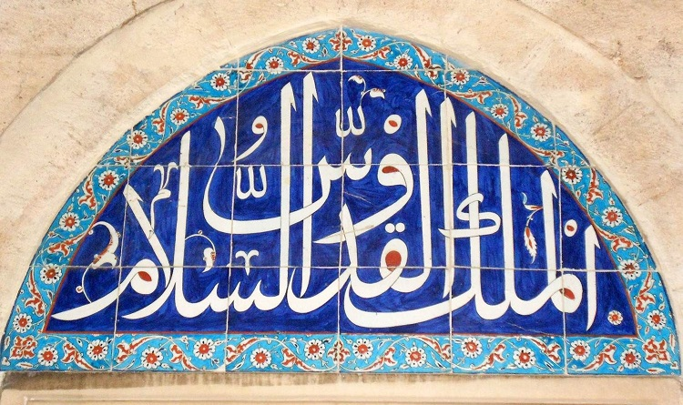
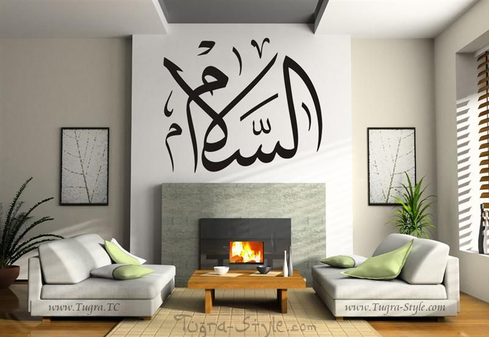

Güzel isimlere Fatiha'dan başlamıştık. Orada bulunan "Mâlik" kelimesinden "el-Melik"e ve oradan şu sayfaya ulaştık:
Haşr Suresinin son üç ayetinde 15 güzel isim ve 4 adet lafza-i celal bir arada... Dört âyette geçen "el-esmâul-husnâ" ifadesi de aynı yerde. (Diğerleri: 7:180, 17:110, 20:8)
Aynı sayfada 23. ayetin üç kelimesi bir cami girişini süslüyor: 
59:23 el-melik, el-kuddûs, es-selâm: üç güzel isim birlikte
Hz. Aişe'den gelen bir hadis rivayeti:
Resulullah (s.a.v.) rüku ve secdede
subbûhun kuddûs, rabbul-melâiketi ver-rûh derdi
(Münezzeh, Mukaddes, Meleklerin ve Ruh'un Rabbi)
(Ebu Davud, II, 28-35).
Diğer kelime "es-Selâm" ise günlük hayatımızda esenlik anlamında çok kullanılıyor. 
10:25 vallâhu yehdiy ilâ dâris-selâm
Allah, selam yurduna çağırır ve dilediğini doğru yola iletir.